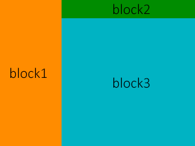
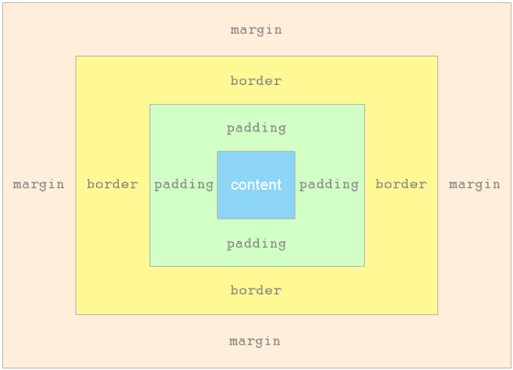
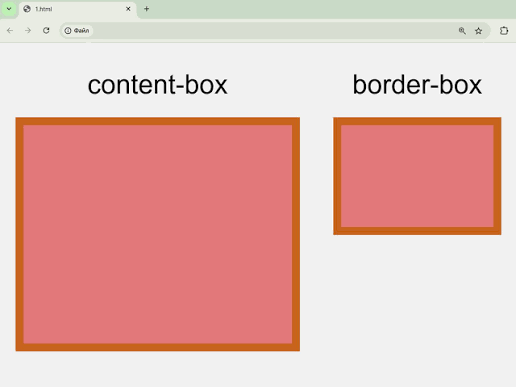

Элементы также имеют внутренний тип отображения, который определяет
расположение элементов внутри них.
Когда вы перейдёте к более подробному изучению CSS вёрстки, вы встретите
flex и другие внутренние значения, которые могут быть у ваших элементов,
например grid.